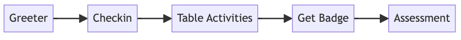
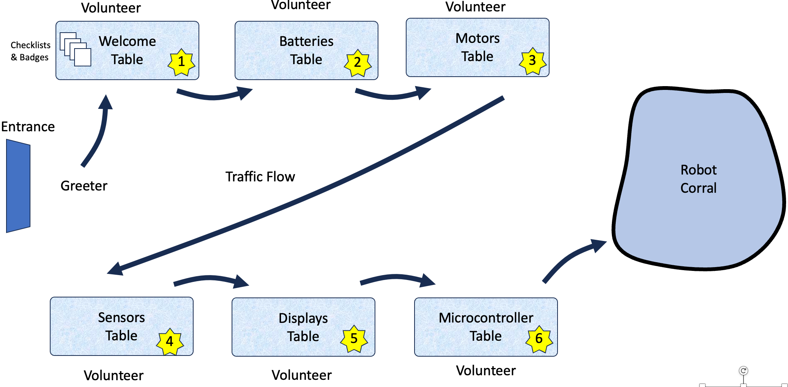
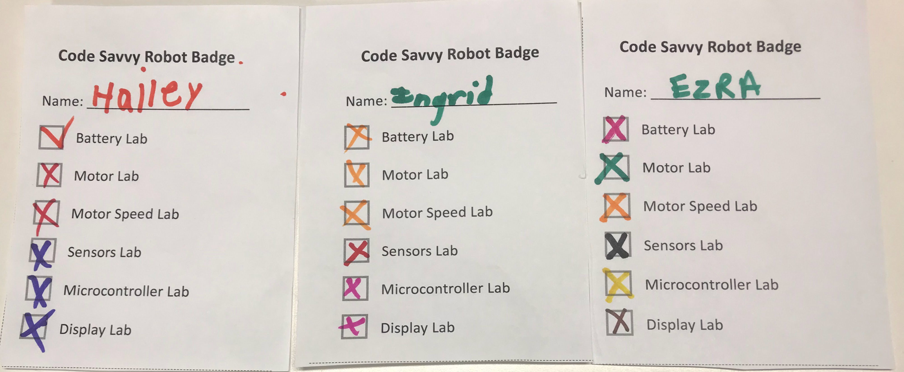

Robot Day Process


Sample Greeting Dialog
The greeter is our most important role. Their job is to make everyone feel welcome and get excited about learning about robots. Greeters need to have a strong awareness of a student's mood and anxiety levels.
Greeter: Do you like robots? Yes? Would you like to take our robot challenge and earn this cool robot badge? Yes? Cool!
Note
If the student looks apprehensive you can just suggest they look around and let the greeter know if they want to take the challenge later.
Next Step: Greeter brings the student over to the registration table]
Checking In

Welcome Table Volunteer: Write your name at the top of this form. If you visit all six tables you will get this cool badge! You can start at the Batteries table here!
Table Activities
A typical list of tables for a large 24'x36' foot room will have the following tables:
- Welcome and Checkin Table
- Batteries Table
- Motors Table
- Sensors Table
- Displays Table
- MicroControllers Table
Which leads to the Robot Corral
Get Badge
Can I see your slip?
Wow! I see you completed all the tasks! Congratulations!!
Here is a collection of badges.

You can pick any color you like.
TODO: Add pick as a color.
Assessment
We just ask a few questions
Kids:
- Did you have a good time?
- What was your favorite part?
Parents:
- Do you have any questions on how kids can learn more about robots and STEM?